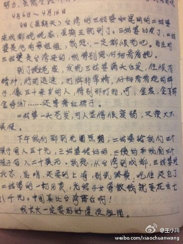

说的好。但令人担心的是：就算是有高考，我们拼得过富二代吗？//@高考快讯: 没有高考，你拼得过富二代吗？@新浪教育:“没有高考，你拼得过富二代吗？”前天，永康市第二中学行政楼大厅的LED大屏幕上打出了这么一句话。从2009年开始，高考冲刺100天的时候，永康二中的这块大屏幕就会写出高考励志标语，今年的激励比往年来得早一些。
Like! //@Alex_Jiang_USTC: 神童。//@蕉太狼大人: 网页链接 本着实事求是的精神我查了一下，笑死//@穷开心的BonoG: //@无业游民贞: 瞎了。//@欧阳葳葳Vivian: 脸被丢光鸟～这是怎么样的奇葩呀//@Ethan_唐: 一朵大奇葩//@郭书豪88:看得我湿透了 //@请叫我小白白:高端---:抱歉，作者已设置仅展示半年内微博，此微博已不可见。
//@搜狗输入法: 儿时理想很丰满，长大做出搜狗输入法，造福全中国3亿用户，很好很“性感”，曲线为国，赞川总！@王小川:翻1990年小学六年级的日记，竟有这么一段：台湾的三姑婆来成都姥姥家，给妈妈、三姨妈和我们三个孩子每人二十美元。我想，从台湾到成都，三姑婆经北京、昆明，还要到上海，别说路费、吃住，还包了二姑婆的一切费用，光给子女等散钱就要花去七八千元。中国真比台湾落后啊！我长大了一定要好好建设祖国。 
一个已经提前知道结果的竞选，为什么会有人去关心……//@三联生活周刊: ＂距离大选投票还有14天，在街上我们看不到任何与竞选有关的东西，政治似乎离生活很遥远。＂---:抱歉，由于作者设置，你暂时没有这条微博的查看权限哦。查看帮助： 网页链接